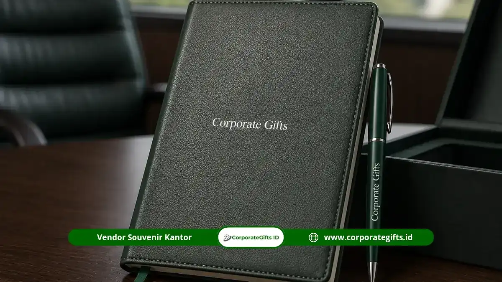

Corporate Gifts ID - Souvenir meeting adalah barang cinderamata yang diberikan perusahaan kepada peserta rapat, klien, atau mitra bisnis sebagai bentuk apresiasi sekaligus media branding. Barang ini umumnya berupa alat tulis premium, drinkware fungsional, atau souvenir kantor custom yang dikemas secara elegan dalam kotak hardbox berlogo.
Corporate Gifts menyediakan seluruh kebutuhan souvenir meeting tersebut dalam satu katalog corporate gift lengkap dengan standar mutu terjamin untuk menunjang reputasi dan citra institusi Anda.
- Souvenir meeting berfungsi sebagai representasi citra profesional perusahaan di mata klien dan mitra kerja.
- Kualitas material dan kemasan menentukan kesan pertama penerima terhadap keunggulan brand.
- Corporate Gifts menawarkan kustomisasi logo presisi tinggi pada aneka merchandise perusahaan dengan kapasitas produksi partai besar.
- Katalog mencakup gift box eksekutif, alat tulis meja, drinkware stainless, hingga aksesori teknologi modern.
Rapat perusahaan bukan sekadar agenda rutin, melainkan momen penting yang menentukan arah pengambilan keputusan bisnis dan kolaborasi strategis.
Dalam momen tersebut, pemberian souvenir meeting bukan lagi formalitas semata, melainkan strategi komunikasi non-verbal yang efektif untuk meninggalkan kesan positif kepada peserta, klien, maupun mitra kerja.
Corporate Gifts hadir sebagai solusi utama untuk kebutuhan tersebut, dengan kurasi paket seminar kit dan souvenir rapat yang dirancang khusus bagi kebutuhan korporat modern di Indonesia.
Mengapa Souvenir Meeting Penting bagi Ekosistem Bisnis Perusahaan
Souvenir meeting memiliki peran strategis karena memengaruhi persepsi penerima terhadap kredibilitas dan keseriusan perusahaan penyelenggara rapat. Strategi ini sejalan dengan panduan souvenir kantor sebagai investasi branding dan loyalitas bisnis.
Barang yang diberikan pada momen rapat membawa dampak psikologis yang melekat lama setelah acara selesai, jauh melampaui fungsi seremonial semata.
Souvenir Meeting sebagai Representasi Citra Profesional
Souvenir yang elegan dan berkualitas menunjukkan keseriusan serta bonafiditas penyelenggara rapat di mata mitra atau klien.
Ketika sebuah perusahaan memberikan gift set dengan finishing rapi dan logo yang tercetak presisi, penerima secara otomatis menilai standar operasional perusahaan tersebut sudah pada level profesional. Kesan ini sering kali menjadi pertimbangan tidak langsung dalam kelanjutan hubungan bisnis.
Souvenir Meeting Meningkatkan Fokus dan Retensi Peserta
Barang fungsional yang dibagikan di awal rapat membuat peserta merasa dihargai sehingga lebih antusias mengikuti jalannya acara hingga selesai.
Blocknote, pulpen branded metal, atau tumbler yang diletakkan di meja masing-masing peserta juga membantu menciptakan suasana rapat yang lebih terorganisir dan minim distraksi karena peserta tidak perlu mencari perlengkapan sendiri.
Standar Kualitas Souvenir Meeting Kelas Atas dari Corporate Gifts
Souvenir meeting yang baik harus memenuhi standar kualitas komersial, bukan sekadar barang seadanya. CorporateGifts.ID menerapkan kontrol kualitas ketat pada setiap lini produk yang masuk dalam katalog resmi.
Material Premium yang Tahan Lama
Material seperti kulit sintetis polyurethane (PU leather), stainless steel food-grade SUS 304 vacuum insulated, dan bahan premium lainnya dipilih karena daya tahannya yang tinggi terhadap pemakaian jangka panjang.
Souvenir berbahan berkualitas tidak mudah rusak meski sering digunakan, sehingga logo perusahaan tetap terlihat dalam kondisi prima dalam waktu lama setelah rapat berlangsung.
Fungsionalitas Tinggi untuk Kebutuhan Sehari-hari
Souvenir meeting terbaik adalah yang tetap berguna baik saat rapat berlangsung maupun setelahnya di meja kerja penerima.
Barang seperti tumbler, pulpen metal, atau flashdisk custom memiliki nilai pakai jangka panjang sehingga brand perusahaan terus terekspos setiap kali barang tersebut digunakan.
Bagaimana Kemasan Memengaruhi Kesan Pertama Penerima Souvenir?
Kemasan hardbox yang menyusun produk dalam posisi mendatar memberikan kesan yang jauh lebih rapi, mewah, dan profesional jika dibandingkan dengan kemasan yang berdiri biasa. Konsep ini serupa dengan standar pada paket gift set eksklusif perusahaan besar dan startup.
Corporate Gifts menerapkan standar packaging premium ini pada setiap paket gift set, sehingga saat kotak dibuka, seluruh isi produk langsung terlihat tertata dan logo perusahaan tampil jelas di posisi utama.

Set alat tulis souvenir meeting custom berupa notebook agenda hardcover, pulpen metal grafir laser, dan flashdisk kartu USB dalam kemasan hardbox.
Katalog Lengkap Souvenir Meeting Premium dari Corporate Gifts
Katalog Corporate Gifts mencakup berbagai lini produk yang dapat disesuaikan dengan skala dan kebutuhan rapat, mulai dari rapat internal harian hingga acara korporat berskala besar:
Paket Corporate Gift Box Custom
Paket ini merupakan set lengkap yang dikemas secara premium dalam balutan hampers dan gift box VIP, menggabungkan beberapa item eksklusif sekaligus dalam satu hardbox. Cocok digunakan untuk rapat penting, kunjungan klien, atau acara korporat yang membutuhkan kesan mewah dan menyeluruh.
Kebutuhan Esensial Rapat: Agenda Book dan Pulpen Metal
Buku agenda custom dan pulpen metal yang dapat diukir nama peserta menjadi kombinasi wajib pada hampir setiap paket souvenir meeting. Kedua item ini praktis digunakan langsung saat rapat berlangsung sekaligus meninggalkan kesan personal bagi penerimanya.
Drinkware: Tumbler dan Mug Custom Logo
Tumbler stainless yang mampu menjaga suhu minuman menjadi pilihan populer untuk diletakkan di meja rapat. Selain fungsional, drinkware custom logo terus digunakan penerima dalam aktivitas harian setelah rapat, atau sebagai variasi set hidangan seperti souvenir tea set kantor berlogo.
Tech Accessories dan Gadget Pendukung Presentasi
Flashdisk custom, powerbank, atau pointer laser berlogo perusahaan menjadi pelengkap yang relevan untuk menunjang kegiatan presentasi maupun mobilitas kerja peserta rapat, sebagaimana diulas dalam souvenir gadget modern dan inovatif.
Apa Keunggulan Memesan Souvenir Meeting di Corporate Gifts?
Pertanyaan ini sering muncul dari tim pengadaan yang membandingkan berbagai opsi penyedia. Corporate Gifts menjawabnya melalui kombinasi presisi produksi, kapasitas skala besar, dan konsistensi kualitas.
Kustomisasi Logo Presisi Tinggi
Metode cetak seperti laser engraving, UV print, dan teknik deboss atau emboss pada layanan souvenir custom logo digunakan agar logo perusahaan menempel sempurna dan tidak mudah pudar meski produk digunakan dalam jangka panjang.
Setiap teknik dipilih menyesuaikan jenis material produk agar hasil akhir tetap presisi, kontras, dan rapi.
Kapasitas Produksi Fleksibel dan Tepat Waktu
Tim produksi Corporate Gifts di fasilitas workshop produksi resmi mampu menangani pesanan dalam jumlah besar dengan kualitas yang tetap konsisten pada setiap unitnya.
Fleksibilitas ini penting bagi perusahaan yang memiliki tenggat waktu ketat sebelum pelaksanaan rapat atau acara korporat.
Faktor Penting Sebelum Memesan Souvenir Meeting Perusahaan
Sebelum menentukan pilihan souvenir meeting, tim pengadaan perlu mempertimbangkan beberapa faktor agar barang yang dipesan benar-benar sesuai dengan kebutuhan acara dan anggaran perusahaan:
Menyesuaikan Souvenir dengan Skala dan Jenis Rapat
Rapat internal harian tentu memiliki kebutuhan souvenir yang berbeda dibandingkan rapat dengan klien besar, pertemuan bisnis di kota besar seperti souvenir event perusahaan Jakarta, atau kunjungan tamu VIP.
Menentukan skala acara sejak awal membantu tim pengadaan memilih lini produk yang tepat, apakah cukup dengan item fungsional sederhana atau perlu paket gift box yang lebih eksklusif.
Mempertimbangkan Jumlah Peserta dan Waktu Produksi
Jumlah peserta rapat menentukan volume pemesanan, sementara tenggat waktu pelaksanaan acara menentukan seberapa cepat proses produksi harus diselesaikan.
Mengomunikasikan kedua faktor ini sejak awal kepada tim produksi membantu memastikan seluruh souvenir siap didistribusikan tepat waktu tanpa terburu-buru pada tahap akhir.
Kesalahan Umum yang Perlu Dihindari saat Memilih Souvenir Meeting
Beberapa kesalahan yang sering terjadi antara lain memilih barang tanpa mempertimbangkan fungsionalitas jangka panjang, mengabaikan kualitas kemasan, atau menentukan desain logo terlalu mendekati tanggal acara sehingga waktu produksi menjadi sangat terbatas.
Perencanaan yang matang sejak jauh hari membantu menghindari kendala tersebut sekaligus memastikan hasil akhir sesuai ekspektasi.
Menyesuaikan Souvenir dengan Anggaran dan Tujuan Jangka Panjang Brand
Anggaran souvenir sebaiknya dipandang sebagai investasi branding, bukan sekadar biaya operasional rapat. Anda dapat mempelajari teknik alokasi budget pada panduan tips memilih seminar kit dan souvenir sesuai budget.
Barang dengan kualitas baik cenderung digunakan penerima dalam jangka waktu lebih lama, sehingga logo perusahaan terus terekspos jauh melampaui hari pelaksanaan rapat itu sendiri.
Pendekatan ini membantu tim pengadaan melihat nilai souvenir bukan hanya dari harga satuan, tetapi dari durasi dan intensitas penggunaan barang oleh penerima.
Cara Memilih Souvenir Meeting Sesuai Karakter Peserta Rapat
Karakter dan posisi peserta rapat turut memengaruhi jenis souvenir yang paling sesuai untuk diberikan. Peserta internal, klien eksternal, dan tamu VIP memiliki ekspektasi yang berbeda terhadap barang yang mereka terima:
Souvenir untuk Peserta Rapat Internal
Untuk rapat internal rutin, souvenir fungsional sederhana seperti blocknote dan pulpen custom sudah cukup memenuhi kebutuhan tanpa perlu anggaran besar, namun tetap memperkuat identitas visual perusahaan di lingkungan kerja sehari-hari.
Souvenir untuk Klien dan Mitra Eksternal
Klien dan mitra eksternal umumnya lebih tepat menerima souvenir dengan nilai presentasi lebih tinggi, seperti paket gift box atau drinkware premium, sebagaimana disarankan pada referensi souvenir eksklusif untuk klien VIP dan souvenir pisah sambut kantor.
Souvenir untuk Tamu VIP dan Jajaran Direksi
Tamu VIP dan jajaran direksi umumnya menerima cinderamata dari koleksi souvenir VIP premium atau souvenir eksklusif untuk pejabat dengan tingkat personalisasi tertinggi, seperti agenda kulit dengan nama terukir atau pulpen metal eksklusif, sebagai bentuk penghormatan khusus.
Tabel Rekomendasi Paket Souvenir Meeting Berdasarkan Skala Acara
Berikut matriks panduan kurasi paket souvenir meeting berdasarkan skala acara dan profil target peserta Anda:
| Skala / Jenis Rapat | Target Profil | Kombinasi Item Unggulan | Teknik Personalisasi | Estimasi Budget |
|---|---|---|---|---|
| Rapat Internal Rutin | Tim Kerja, Karyawan Divisi | Spiral Notebook + Pulpen Gel Custom + Lanyard Satin | Sablon Presisi / UV Print | Rp25.000 - Rp50.000 |
| Koordinasi Mitra & Klien | Mitra Kerja, Vendor Rekanan, Klien B2B | Notebook PU Leather + Pulpen Metal + Tumbler Vacuum 500ml | Laser Engraving & Blind Deboss | Rp75.000 - Rp150.000 |
| Rapat Evaluasi Antar Cabang | Pimpinan Cabang, Manajer Regional | Executive Planner + Flashdisk Kartu 32GB + Wireless Pointer | UV High-Res & Laser Marking | Rp100.000 - Rp200.000 |
| Pertemuan Direksi & RUPS VIP | Dewan Direksi, Komisaris, Pemegang Saham | Executive Leather Set + Rollerball Pen + Powerbank Wireless + Hardbox Beludru | Laser Name Engraving & Gold Foil Deboss | Rp250.000 - Rp650.000+ |
Pertanyaan Seputar Souvenir Meeting Kantor (FAQ)
Kesimpulan dan Cara Memesan Souvenir Meeting
Souvenir meeting yang tepat memperkuat citra profesional perusahaan sekaligus meninggalkan kesan positif yang bertahan lama bagi peserta rapat, klien, maupun mitra bisnis.
Pemilihan material premium, fungsionalitas tinggi, dan kemasan hardbox yang rapi menjadi tiga faktor utama yang wajib dipertimbangkan sebelum memesan.
Jangan tunda kebutuhan souvenir meeting perusahaan Anda. Kunjungi katalog lengkap Corporate Gifts atau hubungi tim sales kami sekarang untuk konsultasi paket custom logo sesuai kebutuhan dan tenggat waktu rapat Anda, atau ajukan penawaran harga melalui formulir permintaan penawaran resmi (RAB).
Disclaimer: Pilihan produk, kustomisasi logo grafir/emboss, dan kemasan hardbox eksklusif dapat disesuaikan dengan kebutuhan korporasi Anda melalui layanan konsultasi CorporateGifts.ID.